At Good Bakers, we believe that every celebration deserves the sweetness of a perfect cake — one that’s not only delicious but also 100% vegetarian. Because at Good Bakers, we don’t just bake cakes — we bake memories, the pure veg way. 🍰💛
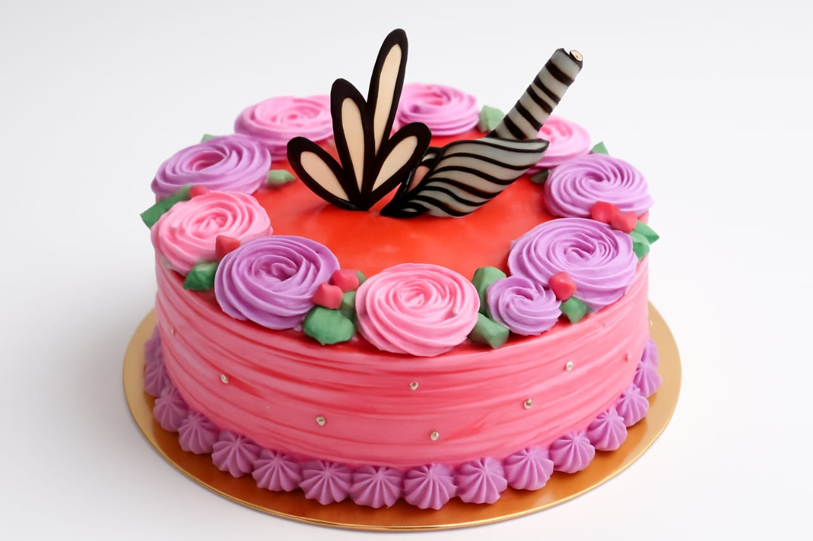 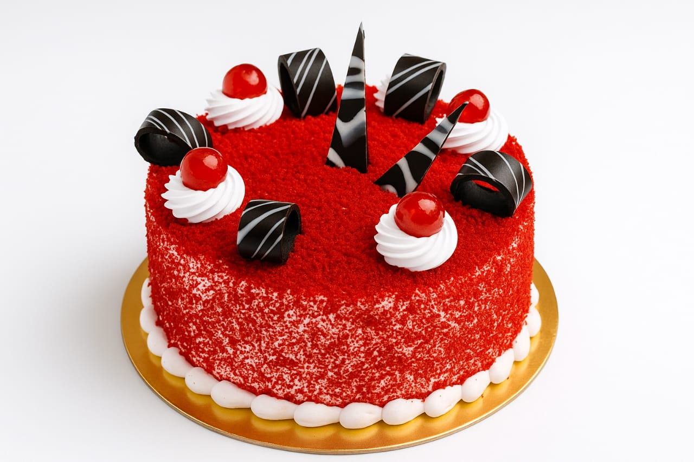 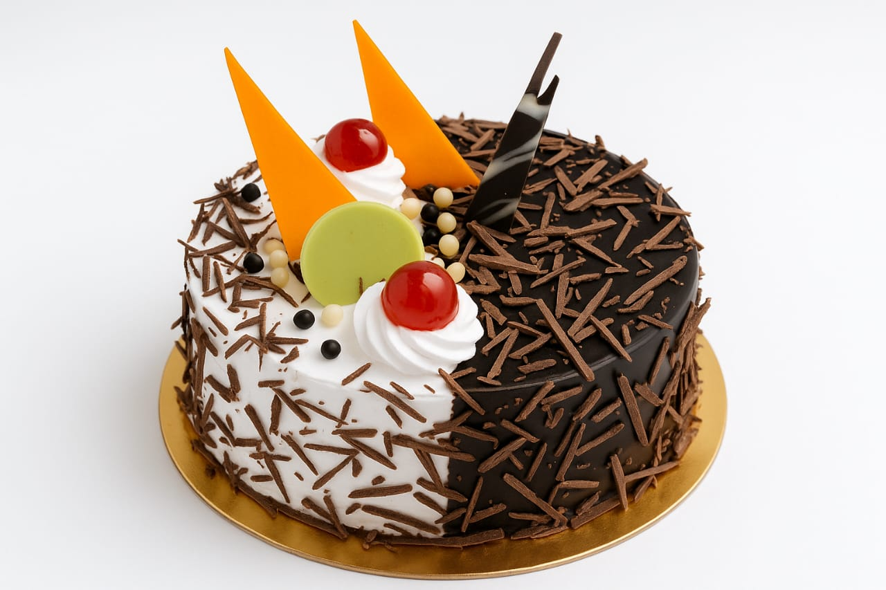Every pastry tells a story. At Good Bakers, it’s a story of purity, passion, and unforgettable flavor. We don’t just layer cream and chocolate — we layer joy, tradition, and the warmth of home. Our 100% vegetarian pastries and desserts are crafted with care, using only the finest ingredients and a sprinkle of love in every swirl. Whether it’s the first bite of a flaky tart or the last spoonful of velvety mousse, each moment is a celebration. So go ahead — treat yourself, surprise a loved one, or sweeten your day. Because at Good Bakers, dessert isn’t the end of a meal — it’s the beginning of a memory. 🍮💫
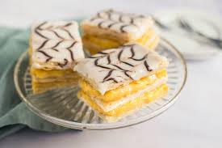 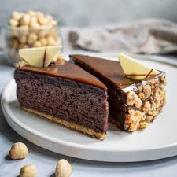 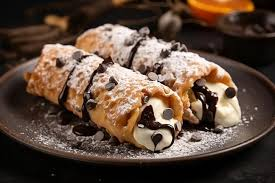At Good Bakers, biscuits and cookies aren’t just snacks — they’re little bundles of joy, baked to brighten your day. Each one carries the warmth of home, the crunch of comfort, and the sweetness of shared moments. Made with premium ingredients and 100% vegetarian love, our treats are perfect for tea-time chats, school tiffins, or midnight cravings. Whether it’s the buttery melt of a shortbread or the spiced hug of a masala cookie, every bite is a memory waiting to happen. So go ahead — open a box, open your heart, and let the goodness begin. 🍪💛
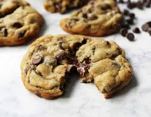 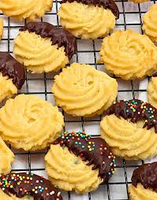 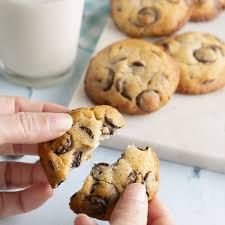 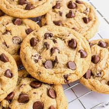 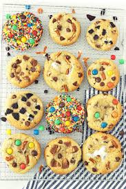 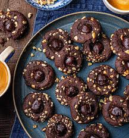At Good Bakers, snacks aren’t just bites — they’re moments of joy, made to be shared. From crispy delights to savory surprises, our 100% vegetarian snacks are crafted with care, flavor, and a dash of nostalgia. Whether it’s a quick break, a family gathering, or a cozy evening in, our snacks bring comfort, connection, and a smile to every plate. No preservatives. No shortcuts. Just honest ingredients and the kind of taste that reminds you of home. So when hunger calls, answer with goodness. One bite, and you’ll know — it’s a Good Bakers kind of day. 🧡🥨
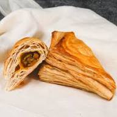 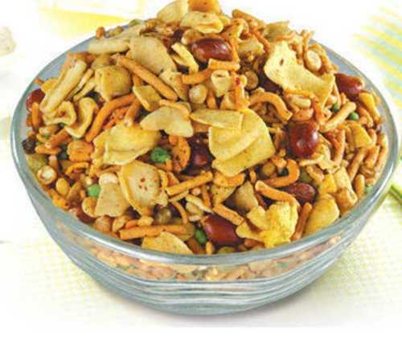 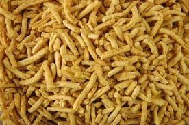At Good Bakers, we believe the simplest things can bring the greatest comfort — like the aroma of freshly baked bread. Our wheat breads, buns, and wholesome bites are made with love, care, and 100% vegetarian goodness. Every loaf is soft, hearty, and full of flavor — perfect for breakfast tables, lunchboxes, or evening tea. From multigrain loaves to soft pavs and savory rolls, we bake with the finest ingredients and a promise of purity. No shortcuts. No preservatives. Just honest food that feels like home. Because when it’s made with love, even the everyday becomes extraordinary. Taste the warmth — only at Good Bakers. 🍞
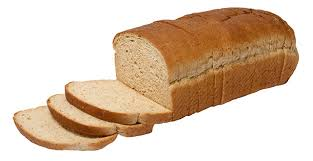 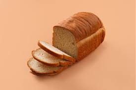 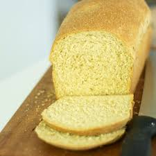Welcome to Good Baker’s, your neighborhood bakery where freshness and flavor come first. We bake with love and care — from soft breads and creamy cakes to crispy cookies and tasty snacks — using only quality ingredients that you can trust. At Good Baker’s, we believe good food doesn’t have to be fancy; it just has to be made right. Every bake is our way of bringing a little happiness to your home, one bite at a time.
When you buy three cakes of 1 kilogram or two cakes of 1.5 kilogram, you get a kilogram cake as a gift.

Phone:
+91-9219847836
+91-9536401228
+91-6398042682
E-mail:
goodbakershomemade@gmail.com
Address:
Good Bakers,
150 Sai Lok Colony, GMS Road, Dehradun, Uttrakhand, 248146